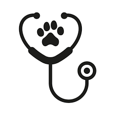
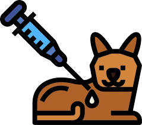
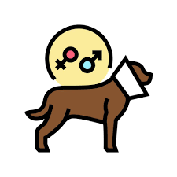
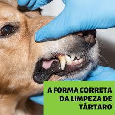

Consultas e check-up
Avaliação clínica, prevenção e acompanhamento contínuo.
Atendimento veterinário completo, com prevenção, diagnóstico e acompanhamento próximo para cães e gatos.

Unimos acompanhamento preventivo, estrutura organizada e comunicação clara para que tutores entendam cada etapa do atendimento.
Porque um site profissional também precisa comunicar prioridades reais: organização, confiança, informação objetiva e acesso rápido ao agendamento.
Da prevenção ao suporte em situações delicadas.

Avaliação clínica, prevenção e acompanhamento contínuo.

Protocolos de imunização para cães e gatos.

Procedimento planejado com avaliação pré-operatória.

Prevenção e remoção de tártaro com orientação.
Avaliação rápida em situações que exigem atenção.
Apoio diagnóstico para decisões mais precisas.
Entre em contato e solicite um horário com a equipe.